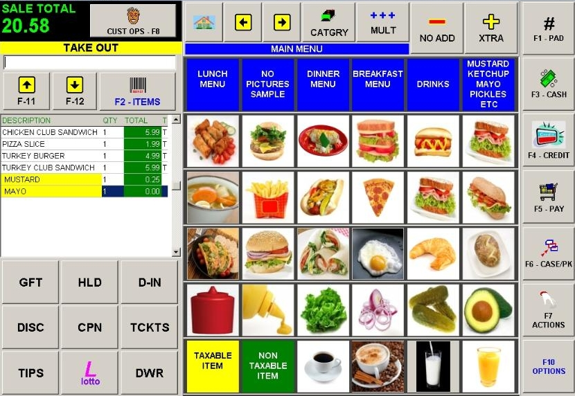
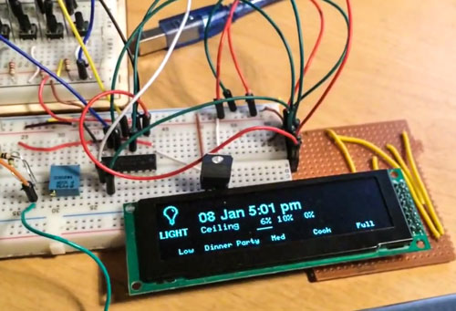
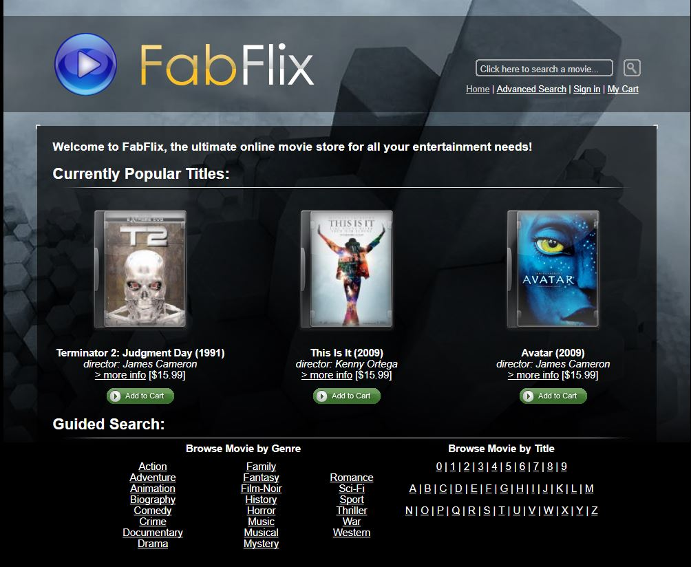

ABOUT ME
Who I am?
My name is Kha Bui. I am an aspiring web developer studying Computer Science. I am a senior at the University of California, Irvine. I grew up in Viet Name and just moved to United States few years ago.
Before coming to college, I had no experience with coding and web design. I went to Orange Coast College in 2013 and began my passion in Computer Science. It was first harder than I thought. However, I really enjoyed coding even though I wasn’t very good at it. I started practicing and refine my skills. Later on, I transfer to UCI for my Bachelor Degree in Science. I began going deeper into the major, studying for classes, and working on my side projects. I have worked to develop partnership and leadership through many group projects and activities that I joined. I have completed coursed from basic coding to operating systems, web develop.
Why are you here?
There are many reason that you are here visiting my portfolio. You maybe a recruiter looking for team members. You may also be some friends, or just strangers who saw something interesting in my portfolio. Despite whoever you are, you will know a little about myself throughout my portfolio. Enjoy!
RESUME
EDUCATION
Orange Coast College
Year: 2013-2015
AS Degree in Computer Science
- Computer Architecture and Organization
- Data Structures
- Software Engineering
- Linear Algebra
- Statistics and Data Analysis

University of California, Irvine
Year: 2015-2018
BS Degree in Computer Science
- Programming Concept
- Computer Networks
- Human Computer Interaction
- Design and Analysis of Algorithm
- Software Engineering
- Linear Algebra
- Statistics and Data Analysis
EXPERIENCE
Programmer Analysis I
2016 - Present
- Provided friendly, easy to understand troubleshooting guidance for all inquiries resulting from handset or data devices and technical service issues.
- Built customer loyalty through timely and effective one call resolution.
- Demonstrated mastery of customer service call script within specified time frames.
- Worked with upper management to ensure appropriate changes were made to improve customer satisfaction
Anaheim Convention Technical Support
2015-2016
- Repaired desktop & laptop computers. Configured network including Wi-Fi issues
- Diagnosed & provided a path to resolving various technical issues
- Proactively identified ways to avoid recurrence of customer issues by improving the processes, reviewing technical articles
- Performed data recovery and data backup for the customers and businesses
SafeLink Wireless Representative
2014-2015
- Organized customer information and account data for business planning and customer service purposes
- Followed up with customers regularly regarding services scheduled and payments due
- Proactively suggested new shorter customer call script for the help center which was taken up by the management team and implemented
- Maintained quality control seeking new ways to improve customer service
PROGRAMMING SKILLS
C++
c#
C
Java
HTML
CSS
DBM
PROJECTS
-
Restaurant Point Of Sale System
A point of sale system for Dim Sum restaurant to process food orders and retail transactions. Applied agile method and database management skills to design the application.
Accomplishments: A complete Software Requirement Specification document. A system provides useful functionalities with user-friendly design -
Arduino Smart-home Control System
An automatic system installed at home to measure temperature and rain precipitation. Applied simple weather prediction algorithm to calculate data collected by sensors. Operated Arduino and different sensors using Arduino IDE to collect weather data. Connect and control smart outlets with timer feature.
-
FabFlix Movie
Created a completed website for a movie page called FabFlix. Using Amazon server to publish the site Utilize Ubuntu server on Amazon Web Service to run the site. Using Apache as a service for web base. Perform web design skills: html, css, bootstrap. Perform back-end skills: server coding, database (mySQL), java connection.